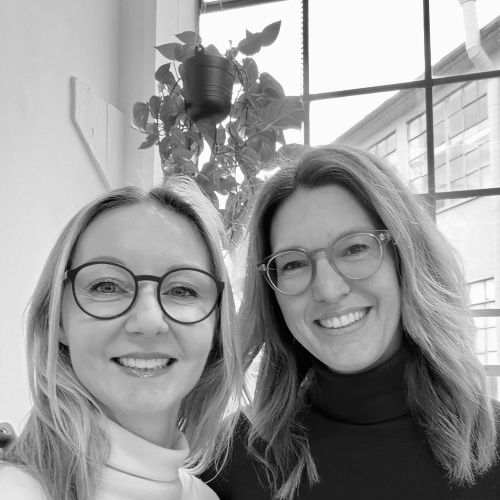
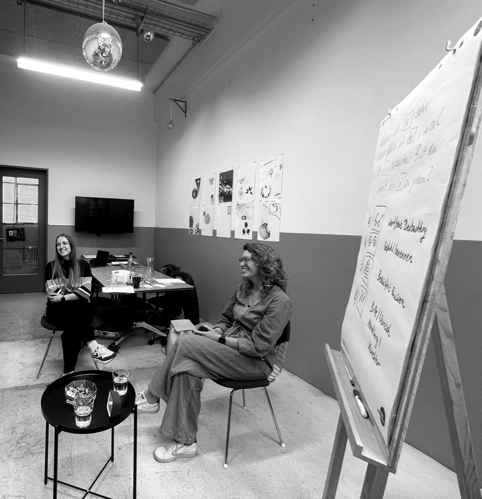

Angebot
Der Peer-Raum für Co-Leader:innen
Du arbeitest in einem Co-Leadership und spürst: Diese Konstellation ist anders. Mehr Kraft durch mehrere Köpfe, aber auch eigene Herausforderungen in Sachen Sichtbarkeit, Rollen, Tempo und Beziehung. Für genau diese Themen gibt es selten den passenden Raum.
co:labor ist der Ort, an dem genau diese Themen Platz haben: Ein kleiner, konstanter Kreis von Co-Leader:innen aus unterschiedlichen Branchen und Hierarchiestufen, die sich gegenseitig auf Augenhöhe spiegeln. Was hier entsteht, ist kein theoretischer Austausch, sondern echte Unterstützung von Menschen, die dieselben Dynamiken aus eigener Erfahrung kennen.
Für Co-Leader:innen aller Branchen und Hierarchiestufen: Klassisches Co-Leadership, Co-Founder:innen oder laterale Führungskonstellationen. Du nimmst allein teil, im Austausch mit anderen Co-Leader:innen in ähnlicher Situation.
«Solche Reflexionsräume helfen enorm, weil man sich verstanden fühlt. Die Herausforderungen im Co-Leadership sind einfach andere als in klassischen Führungsrollen.»
Sarah, Co-Leaderin

Anna Schreier und ich leiten co:labor gemeinsam. Anna ist zertifizierte Business Coach mit Fokus auf Co-Leadership-Coaching, ich bringe 3,5 Jahre eigene Co-Leadership-Erfahrung und mein Wissen aus meiner MAS-Abschlussarbeit zum Thema mit.

Live-Szene aus einer co:labor-Session.
Typische Themen, die wir bearbeiten: Sichtbarkeit und Anerkennung fair gestalten, Verantwortung und Rollen klären, Führungsverständnis abstimmen, Konflikte konstruktiv ansprechen.
«Gutes Co-Leadership braucht Zeit und den Mut, die unangenehmen Themen anzusprechen. co:labor ist für mich ein Raum, um das zu üben.»
Georgia, Co-Leaderin
Inklusive Organisation, Moderation, Raummiete, thematischen Impulsen, Tools und Getränken.
Geld-zurück-Garantie: Überzeugt dich das erste Treffen nicht, erhältst du dein Geld zurück.
Bereit für ehrlichen Austausch auf Augenhöhe?
Ich möchte dabei seinSuchst du eher 1:1-Begleitung? Mehr zum Leadership Mentoring →